The drawing mode is selected by clicking on the corresponding button. The image on the button will turn negative, indicating that it is selected. Settings in the Attribute Panel will be applied to newly created objects, so users should set those attributes before creating new objects.
For overlapping objects, the depth attribute is important for xfig to know the drawing order. Please see Layers (Depths) for details.
Predefined styles may be created by the user by using the style manager.
It is also possible to modify the attributes of an object using EDIT or UPDATE after the object has been created.
The function of each mouse button will change depending on the selected drawing mode or situation. This is displayed in the Mouse Function Indicator. Mouse button 1 is mainly used for creating objects, but mouse button 2 is also used in some cases. In most cases, mouse button 3 (`cancel') is used to cancel an operation.
By default, there is a point positioning grid (snap-to grid) which forces the points of the object you draw to a discrete grid. This grid may be turned off or set to various sizes. See POINT POSITION
In the former mode, users should click mouse button 1 (`Circle center') at the center point of the circle first, and then click mouse button 1 (`set radius') again at any point on the circle.
In the diameter mode, users should click mouse button 1 (`Circle diameter') at any point on the circle, and then click mouse button 1 (`set radius') again at the opposite point on the circle.
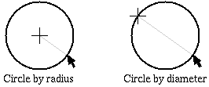
If area fill is specified by FILL STYLE, the inside of the circle will be filled according to the setting. If you want to create tiny filled circle, you can also use POLYLINE.
When creating a circle, the size (radius or diameter) of the circle is displayed on the Message Panel dynamically.
In the former mode, users should click mouse button 2 (`Ellipse center') at the center point of the ellipse first, and then click mouse button 2 (`first corner') again at any corner point of the imaginary rectangle which encloses the ellipse.
In the diameter mode, users should click mouse button 2 (`Ellipse corner') at any corner point of the imaginary rectangle which encloses the ellipse, and then click mouse button 2 (`final corner') again at the opposite corner point of the rectangle.
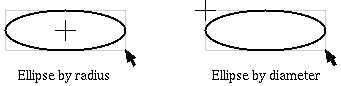
If TEXT/ELLIPSE ANGLE is set to non-zero, the ellipse will be rotated by the angle, positive being counter-clockwise.
To make a freehand line for any SPLINE, POLYGON, or POLYLINE, click mouse button 2 (`freehand') at the first point, then drag the mouse to make the line. As you move the mouse points will be added to the line. Click mouse button 2 (`final point') again to finish.
See also About Spline Curves.
See also About Spline Curves.
See also About Spline Curves.
See also About Spline Curves.
To create a polyline or line segment, specify the first point by clicking mouse button 1 (`first point') at the point, and then specify intermediate points by clicking mouse button 1 (`next point') repeatedly. Finally, click mouse button 2 (`final point') at the final point.
To make a freehand line for any SPLINE, POLYGON, or POLYLINE, click mouse button 2 (`freehand') at the first point, then drag the mouse to make the line. As you move the mouse points will be added to the line. Click mouse button 2 (`final point') again to finish.
To enter a single point click mouse button 3 (`single point'). The shape of the point will be a filled circle if CAP STYLE is ROUND, or a filled square otherwise. The size of the point will be equal to the line width.
If area fill is specified by FILL STYLE, the region enclosed by the polyline (first point and last point are considered connected) will be filled according to the setting. When filling a complex region, the `even-odd rule' will be used to decide the area to be filled.
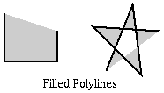
For all objects, clicking mouse button 3 (`cancel') will cancel all input. For objects that may have more than two points, clicking mouse button 1 while pressing the SHIFT key (`del point') will cancel entered points one by one.
When entering lines, splines or polygons, the number of points entered and the distance from last point (length, dx and dy) is displayed on the Message Panel dynamically.
For open-ended objects, if ARROW MODE is not None, an arrow head will be added to one or both end-points.
If Show line lengths is set ON (see Global Settings panel and View menu), more information about the lengths of lines being drawn is shown. This is true for most Fig objects being drawn.
By default, end "ticks", arrowheads and a box around the text are automatically included in the dimension line, but these are controlled in the attributes listed below. Here are several examples of dimension lines: 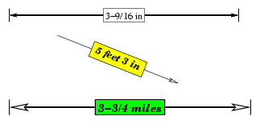
Click mouse button 1 (`center point') at the center of the polygon, and then click mouse button 1 (`final point') again at the any vertex of the regular polygon. The number of sides is specified by NUM SIDES in advance.
This will create a simple POLYGON object, and each point of the object may be moved independently after it is created (and result of the edit will no longer be a regular polygon).
Click mouse button 1 (`corner point') at any corner of the rectangular box, and click mouse button 1 (`final point') again at the opposite corner.
If area fill is specified by FILL STYLE, the box will be filled according to the setting.
A box created with this function can't be rotated by an arbitrary angle, only by multiples of 90 degrees. To create an arbitrarily rotatable rectangular box, you should use POLYGON (it may be easier to create non-rotated rectangle first and then rotate it by ROTATE). You may also use REGULAR POLYGON to create a rotated square.
It is also possible to convert objects between BOX and ARC-BOX with BOX <-> ARC-BOX.
There are two ways to draw arcs in xfig:
There are two types of arcs, open-arc and pie-wedge, which may be selected by ARC TYPE.
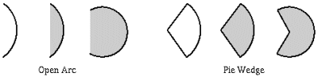
Click mouse button 1 (`corner point') at the corner
where the upper-left corner of the imported image should be placed,
then click mouse button 1 (`final point') again at the opposite corner.
The imported image will be rotated automatically according to the
order of the corners entered, e.g. if you start with the
lower-right and end with the upper-left the image will be rotated 180 degrees.
Similarly, starting with the lower-left and ending with the
upper-right will rotate the image 90 degrees counter-clockwise,
and starting with the upper-right and ending
with the lower-left will rotate the image 90 degrees clockwise.
It is not necessary to try to set the exact size here
because it is possible to modify size or height/width ratio of the image later.
After this, the Edit Panel
will open, where you enter the file name of the image file.
It is also possible to capture an image from the screen using the
Screen Capture button.
It is possible to read image files in the following image formats:
 EPS (Encapsulated PostScript)
GIF
with transparency
JPEG (JFIF)
PCX (PC Paintbrush)
PNG (Portable Network Graphics)
PPM (Portable Pixmap)
TIFF (Tagged Image File Format)
XBM (X11 bitmap)
XPM (X11 pixmap)
EPS (Encapsulated PostScript)
GIF
with transparency
JPEG (JFIF)
PCX (PC Paintbrush)
PNG (Portable Network Graphics)
PPM (Portable Pixmap)
TIFF (Tagged Image File Format)
XBM (X11 bitmap)
XPM (X11 pixmap)
Although it is possible to move, scale and rotate an imported image, it is not possible to edit the image itself using xfig. To edit images, use another application such as xpaint or GIMP. The Edit Image button on the Edit panel will start an external image editor (default is xdg-open and it may be changed to your favorite image editor, e.g. xpaint by changing the Fig.image_editor resource or starting xfig with the -image_editor option followed by the name of your image editor).
If you want edit figures in formats such as PostScript or HP-GL using xfig, try pstoedit or hp2xx to first convert them to Fig files then Load or Merge them into xfig.
To import EPS files, xfig invokes GhostScript to render the image. GhostScript must be compiled with `pcx256' and `pbmraw' drivers. The `pcx256' driver will used to generate color images, and `pbmraw' driver will used to generate monochrome images (used when xfig is running on a monochrome X server or with the -mono option).
JPEG and XPM support may be included or excluded depending on the configuration when compiling xfig.
xfig can also read files compressed with compress (.Z suffix) or gzip (.z or .gz suffix). To do this, the uncompress and gunzip command must be available for xfig to invoke them.
See also Edit Panel about PICTURE objects.
Click mouse button 1 (`posn cursor') at the desired position on the canvas to specify the position where the text should be placed, then enter text from the keyboard, or to paste text already selected from another application (the PRIMARY cut buffer), press the shift key and mouse button 2, or F18 (the `Paste' key on Sun Workstations), or F20. Selecting Paste Text from the Edit menu will also paste text from the PRIMARY cut buffer.
It is also possible to edit existing text by clicking mouse button 1 (`posn cursor') at any point on the existing text. See Character Editing for editing facilities.
If TEXT/ELLIPSE ANGLE is set to non-zero, the text will rotated by the angle, positive being counter-clockwise.
It is possible to enter Latin-1 glyphs such as `ä' or `ç' (Compose characters) using the COMPOSE (META) key. See Latin-1 Characters about this. These tables also show the keyboard mapping for glyphs from the Symbol font.
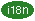 In international-xfig, it is possible to enter local text such as Japanese with this.
A simplistic superscript/subscript facility is provided. While entering
text, if Ctrl-^ (control caret) is pressed, a new, smaller
string is started above the baseline
of the current string, which acts as a superscript.
Conversely, if Ctrl-_
(control underscore) is typed, a new, smaller string is started below
the baseline of the current string.
These may be nested to create super-superscripted or sub-subscripted text to
four levels.
Here are some examples:
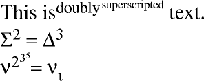There are several caveats:
Since separate strings are created each
time a super- or sub-script is initiated,
if you want to move them together,
you must glue all the strings into a
compound first.
Editing one of the
strings may be problematic because the other strings will not move if
characters are added or deleted to/from the string being edited.
This doesn't work for right justified or centered text.
| <Backspace> or Control-H | Delete a character to the left of the cursor. |
|---|---|
| <DEL> or Control-D | Delete a character to the right of the cursor. |
| Control-X | Delete all the characters to the left of the cursor. |
| Control-K | Delete all the characters to the right of the cursor. |
| <Home> or Control-A | Move cursor of the start of the text. |
| <End> or Control-E | Move cursor of the end of the text. |
| <Left> or Control-B | Move cursor left one character. |
| <Right> or Control-F | Move cursor right one character. |
| <Return> or Control-M | Finish entering the text and
start entering text on the next line. See also TEXT STEP. |
| <Paste> or <F18> or <F20> | Paste text from the PRIMARY cut
buffer (cut/paste buffer of xterm). Selecting Paste Text from the Edit menu will also perform this function, as will Shift+Mouse Button 2. |
| <Compose> or <Alt> or <Meta> | This key is used to enter Latin-1 character
such as ` ' or
`'. ' or
`'.See also Latin-1 Characters. |
It is also possible to search, replace, and spell-check all the text in the figure.
Clicking on this button will pop up a panel from which you may choose a library of Fig objects. From there, you may select an object and place copies of it on the canvas by clicking on the canvas where you want it placed.
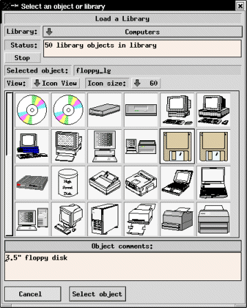
In the panel there is a pull-down menu of the available libraries. Select one and the library will automatically be loaded. The status window will show how many objects it contains after it loads the library, and the icons of the library objects will appear in a view box. Double clicking on an icon or single clicking and pressing the Select Object button will select that object and pop down the panel.
A diamond on the left side of the menu entry indicates that objects are at
that level in addition to subdirectories:
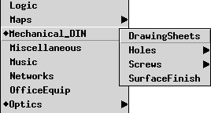
The size of the icons may be chosen from a pulldown menu.
The options are 40, 60, 80, 100 and 120 pixels.
As you move the mouse around the canvas you will see the object you chose from the library appear under the curser. Simply click mouse button 1 (`place object') to place it anywhere on the canvas. This may be repeated for the same object.
If you wish to place the object at the position it was originally created, e.g. for laser printer labels, hold down the Shift key and press mouse button 3 (`place at orign posn') to place it.
There is an alternate list view of the library objects, which may be selected by choosing List View from the pulldown menu next the View: label.
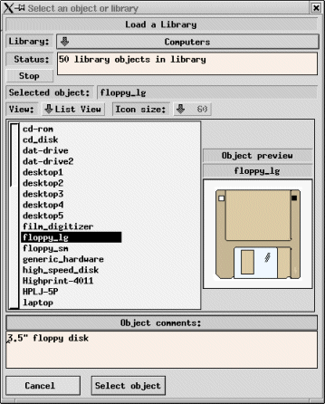In this mode, you will see the object names in a list area. Single clicking on an object name will generate a preview in the small canvas on the right. After selecting the desired object, press `Select object' and the panel will pop down, or double-click on the object name to perform the select and popdown in one step.
If the shift key is pressed when mouse button 1 (`place and edit') is clicked to place the object, the Edit panel is popped up so you may change any comments in the object. This allows customizing of comments in library objects.
The object may be rotated, flipped or scaled before placing it on the canvas by pressing l to rotate left, r to rotate right, h to flip horizonally, v to flip vertically, s to scale down by 0.9 and S to scale up by 1.1.
To choose another object from the library either click mouse button 2 (`new object') or press the library button in the drawing mode panel again.
If you have a slow display or if the library object is complex, you may elect to have xfig show only the outline rectangle as you move the mouse around before placing the object. To switch to this mode, press SHIFT and mouse button 2 (`change draw mode'). You may toggle between drawing modes with this sequence.
To cancel the library placing mode, press mouse button 3 (`cancel library') or any other drawing/editing mode button.
Then you can start xfig specifying your library directory with -library_dir option or Fig.library_dir resource. xfig scans the library directory and all libraries in the directory and any subdirectories will become available.
The default value of library_dir is "$XFIGLIBDIR/Libraries", where libraries comes with xfig will be installed automatically when installing xfig. So, you don't have to specify library_dir if you want to use libraries comes with xfig.
This method is more versatile than the second method because you can add more directories in the top-level directory (or sub-directories) and there is no need to edit the file which contains list of libraries.
Using this method, the names of the libraries are simply the names of the directories; e.g. if the resource "Fig.library_dir: /xfig/Libraries" is defined, the /xfig/Libraries/Flowchart directory will result in the library name "Flowchart", and the /xfig/Libraries/Electrical/Physical directory will result in the library name "Electrical - Physical".
And then you can start xfig specifying the file with -library_dir option or Fig.library_dir resource.
Here is an example of the file:
/xfig/Libraries/Electrical/Logic Electrical Parts (Logic) /xfig/Libraries/Electrical/Analog Electrical Parts (Analog) /home/tim/lib/Flowchart Tim's Flowchart Elements /home/chim/xfig/Buildings Computer Clipart
The advantage of this method is flexibility; you can easily put libraries in various directories into your list of libraries, and you can use any name for each library independent of the filenames.
N.B.: In both methods, any sub-directories (and their sub-directories) found with *.fig files in them will be included in the list.

Users may select from four types of spline curves on the Drawing Mode Panel of xfig. It is also possible to change the type of spline curves using SPLINE <-> LINE, or adjust the shape of the curve by adjusting the "shape factor" after a curve has been created.
CLOSED APPROXIMATED SPLINE
OPEN APPROXIMATED SPLINE
CLOSED INTERPOLATED SPLINE
OPEN INTERPOLATED SPLINE
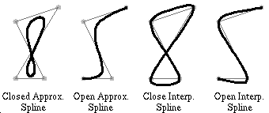
Using splines, curves such as the following may be easily drawn.
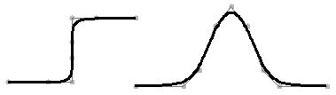
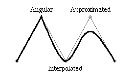
Caveat: Because previous spline models (quadratic B-splines and Bezier with hidden points) are no longer supported per se, curves that are present in xfig version 3.1 and older files are automatically converted to X-splines. This translation is only an approximation process. It means that the converted curves may not be exactly the same as the original ones. Though they are usually very close, some hand-fitting may be needed in some pathological cases.
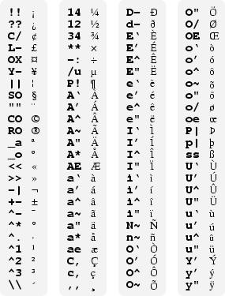The following glyphs from the Symbol font may be entered in the same way:
Note: glyphs OE and oe will not be displayed on the screen, because they are not in the X11 font sets, but they will export and print to PostScript, EPS, PDF and the bitmap formats.
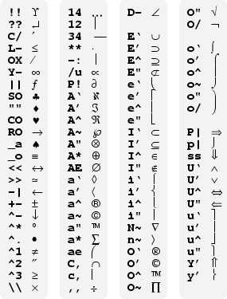
Here is the keyboard mapping for the lower set of glyphs from the Symbol font:
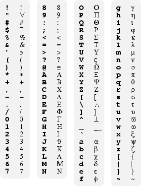
Not all COMPOSE, META and ALT keys can be used on all systems. On some systems such as Sun Workstations, the META key may be labeled as .
If international-xfig is used in environments which use character set other than Latin-1 (Japanese or Korean, for example), it is not possible to use these Latin-1 glyphs when `Times-Roman + Mincho' or `Times-Bold + Gothic' is selected in TEXT FONT.